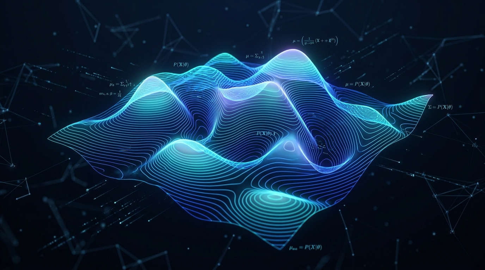

Point-prediction models and deterministic LLMs fail silently under real-world entropy. Gaussian Labs builds high-throughput enterprise infrastructure engineered to quantify uncertainty, compute rigorous Bayesian bounds, and turn probability distributions into economic alpha.

When enterprises deploy foundation models into high-stakes production, a 99% confident wrong answer costs millions. Modern enterprise AI requires mathematical self-awareness.
Traditional AI minimizes average loss across benchmark datasets. Gaussian Labs computes tail risk and posterior density, turning calibrated volatility into structured economic opportunity.
Multi-agent execution graphs fail when uncalibrated uncertainties multiply exponentially. Our Bayesian routing guarantees provable safety envelopes across compound agent architectures.
Variational inference and Gaussian process approximation designed for ultra-low latency modern GPU accelerators, scaling from real-time algorithmic execution to enterprise telemetry.
Compare standard deterministic point predictions against Gaussian Labs' calibrated probability density function. Adjust the variance and entropy sliders to inspect live uncertainty bounds.
Outputs a continuous probability manifold with 95% confidence intervals (\(\mu \pm 1.96\sigma\)). Mission-critical enterprise logic triggers fallback or hedging when variance breaches safety tolerances.
We are building the systems layer that translates theoretical probabilistic machine learning into low-latency, mission-critical enterprise software.
Dynamically routes compound agent queries based on real-time epistemic uncertainty metrics rather than raw heuristic scores.
Auditable, mathematically grounded logs that quantify how confidence shifts under enterprise data distribution drift.
Optimized tensor routines executing variational Bayesian updates in microseconds alongside high-throughput inference.
| Evaluation Vector | Deterministic Enterprise AI | Gaussian Labs Architecture |
|---|---|---|
| Uncertainty Representation | Single scalar / softmax point estimate | Continuous posterior distribution over parameters |
| Out-of-Distribution Behavior | Silent hallucinations with high confidence | Exponential variance expansion (immediate flag) |
| Enterprise Decision Layer | Brittle heuristic if-else chains | Expected utility optimization under risk bounds |
| Compound AI Cascades | Multiplies failure probabilities | Provable safety margins across DAG nodes |
We are partnering with select enterprise engineering teams, quantitative firms, and mission-critical platform leaders to pilot our probabilistic infrastructure.